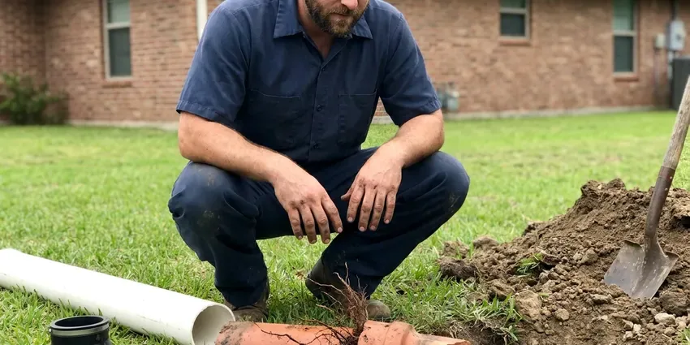

Foundation Leak Repair in Bennington, VT
A slow leak under the slab often runs for months before anyone sees it. CKV Plumbing finds it with acoustic gear and fixes or bypasses the pipe in Bennington, VT.
- Spot Repairs Through Concrete
- Reroute or Direct Repair
- Insurance Documentation Provided
- Licensed and Insured

Need Foundation Leak Repair in Bennington, VT?
CKV Plumbing finds the break first and quotes the repair before we cut anything.
Slab and Foundation Leak Repair in Bennington, VT
CKV Plumbing diagnoses foundation leaks in Bennington, VT with acoustic listening gear and a thermal camera. The thermal camera picks up hot water lines. When the warm streak on the screen lines up with the loudest spot on the ground mic, we know where the pipe is broken and how deep it sits.
Our expertise includes:
- Electronic and acoustic leak detection beneath slabs and stem walls
- Direct repairs through concrete with proper patching and compaction
- Neat concrete cuts with compacted backfill

Additional Plumbing Repair Services in Bennington, VT
We offer expert plumbing repair services across Bennington, VT to stop leaks, clear blockages, and keep every fixture working the way it should.


Customers
Why Choose CKV Plumbing for Foundation Leak Repair in Bennington, VT?
Cutting concrete in the wrong spot costs you a second hole and a second patch. CKV Plumbing marks the leak before anyone cuts, using isolation tests and a ground mic, which keeps the job to one opening in most homes.
- Camera and Radar, We scope drain lines with a camera and scan concrete with ground-penetrating radar before we open the floor.
- Licensed Plumbers, Our technicians are licensed and work to Vermont plumbing code, and permits are handled when a reroute needs one.
- Repairs That Hold, We use brass or copper fittings and proper bedding sand so the repaired section holds up under soil movement.
Citywide Coverage
Every neighborhood of Bennington is in our area for foundation leak calls. Older neighborhoods near the center mostly have copper under the slab, while the newer edges of town lean PEX, and our trucks carry both. Same gear either way.
Experienced Team
Our technicians are trained in leak detection and foundation plumbing repair. They've worked under every common foundation. Slab, post-tension, stem wall and raised floor homes each have their own access path and their own hazards.
Safety-First Approach
All repairs meet local plumbing code, and concrete patches are compacted and finished properly. Permits get handled by us. If a reroute or repipe requires a permit, we file it and meet the inspector so you don't have to wait around.
Trusted Certified Bennington Plumbing Services Professionals
At CKV Plumbing, we take pride in licensed, certified plumbing services throughout Bennington, VT. Credentials matter in this trade. Every repair, install and maintenance visit follows strict safety and quality rules, and the plumbers doing the work carry recognized industry credentials.
Call Us Now PHCC Plumbing Contractor Recognition
PHCC Plumbing Contractor Recognition Better Business Bureau (BBB) Accreditation
Better Business Bureau (BBB) Accreditation Angi Certified Pro
Angi Certified Pro ISO 9001 Quality Management Certification
ISO 9001 Quality Management CertificationFoundation Leak Repair Work in Bennington, VT
Foundation Leak Detection in Bennington
Locating comes before anything else. We split the system first. Each side gets its own pressure test, and once we know which side is losing water, we follow the pipe route with a tracer and listen along it with the ground mic until the sound peaks. Thermal imaging helps confirm hot water leaks by showing warm spots on the floor.

Residential Foundation Leak Repair in Bennington, VT
For a homeowner in Bennington, VT, the first question is usually how bad it is. We answer that with a pressure test. A fast drop on the gauge means a big leak that needs work soon, while a slow drop over twenty minutes points to a pinhole and gives you room to weigh options. We also look for the cause, corrosion, ground movement or a bad fitting.
Exterior Foundation Leak Solutions in Bennington
Not every wet foundation is a plumbing leak. Gutters cause plenty. Downspouts that dump right at the wall and soil that slopes toward the house push water against the foundation, and that pressure finds every crack in the concrete. We regrade the soil, lengthen the downspouts and install French drains around Bennington homes when needed.
PEX and PVC Foundation Leak Repair in Bennington
Newer houses use PEX or PVC under the slab. Plastic pipe fails too. Most failures we find are at a fitting that was crimped short or a joint that pulled apart when the soil moved, not in the pipe wall itself. CKV Plumbing replaces the fitting with a proper crimp, expansion or solvent-weld connection so the line under your Bennington foundation is sound again.
Direct Foundation Leak Repair in Bennington, VT
Direct repair means cutting into the floor right over the leak. It is often the cheapest fix. We saw a small opening, dig down to the pipe, replace the damaged section and pressure test it, then backfill in layers and patch the concrete flush with the floor around it. Your flooring contractor can finish the surface afterward.
Copper Pipe Leak Repair in Bennington, VT
Older homes in Bennington, VT often have soft copper running under the slab. A large share of Vermont homes rely on private wells, and well water here can range from soft to fairly hard depending on the bedrock. Pinholes form where it touches gravel. The bad section comes out, new Type L copper goes in with sweated or pressed joints, and the full line gets a pressure test before any dirt goes back.
Commercial Foundation Leak Repair in Bennington
Restaurants, offices and retail spaces in Bennington get slab leaks too, and CKV Plumbing handles them. Downtime costs money. Work is staged so only the affected branch is off, and concrete cutting can happen overnight to keep your doors open. Perimeter waterproofing is an option on larger buildings.

Emergency Foundation Leak Service in Bennington
A main line that splits under the slab can push water up through grout lines within hours. Close the main valve right away. CKV Plumbing sends a crew to Bennington to isolate the broken line, cap it off so the rest of the house still has water, and then plan the full repair, often the next day.
Nearby Foundation Leak Repair in Bennington, VT
A local plumber who knows the soil gets to the right repair faster. CKV Plumbing handles foundation leak calls throughout Bennington, VT, and we bring the ground mic, thermal camera and test gauges on the first visit so locating can start right away. One trip for locating.
Searching 'foundation leak repair near me' in Bennington, VT usually means something feels wrong underfoot. CKV Plumbing covers the whole area and has a good idea which subdivisions used copper under the slab and which used PEX. It speeds up the diagnosis.
CKV Plumbing at a Glance
- Fully licensed plumbing team covering Bennington, VT
- Same-day appointments and 24/7 emergency response
- Upfront, flat-rate pricing before work begins
- 4.8-star rated by 553+ Vermont customers
Bennington Map
Bennington Information
- Population
- 8,795
- Area codes
- Local
- Service area
- Bennington and communities within 40 miles
- Nearby
- Brattleboro, Rutland, Middlebury, Barre
Clay soils in river valleys drain poorly and can hold water against foundations, so sump pumps are common in low-lying homes. A pipe leaking under the slab keeps that soil wet in one spot, so a minor leak in Bennington, VT can crack tile and pull a wall out of square if it runs for months.
Expert Services
Call CKV Plumbing for honest, reliable plumbing from people who know the trade in Bennington, VT.
Our Specialized Plumbing Services in Bennington, VT
At CKV Plumbing, we handle the full list of plumbing services across Bennington, VT. From leak detection to full system installs, our team works fast and charges fair prices on homes and commercial properties alike. Here are the core services we offer:


How Foundation Leak Repair Works in Bennington, VT
We isolate the lines, locate the break and then repair it with as little cutting as we can manage.
Call or Book Online
Call (802) 209-5139 or use the online form, and tell us what you are seeing. We set a time for a tech to visit your Bennington property.
Locate the Leak
The tech tests each side separately, then uses a ground mic and thermal camera to mark the leak without tearing up floors.
Repair and Retest
You choose a spot repair, a reroute or a tunnel. We do the work to Bennington, VT code, then pressure test the line again before closing it up.
Frequently Asked Questions About Foundation Leak Repair in Bennington
Leak detection typically costs $150 to $450. The repair is a separate price. A direct repair through concrete tends to run $1,500 to $4,000, while a reroute is often $1,800 to $5,000 depending on length and wall access. Full repipes are quoted individually.
You can't prevent every one. A yearly check helps. Keeping soil moisture steady around the foundation, fixing gutters that dump at the wall and bedding any new pipe in sand all lower the odds of another leak. That applies to most Bennington, VT homes.
Gutters and downspouts should carry water at least a few feet from the house. Slope the soil away. Soil around the foundation should slope away from the wall, stay at a fairly even moisture level and not erode into channels, and it is smart to have the plumbing checked for slow leaks every couple of years.
Quikrete hydraulic cement, Sika injection resins and Tremco membranes are the products we reach for most. Each one has a job. Cement stops active seepage, injection resin fills cracks, and membranes waterproof the wall face, chosen by what has lasted on jobs we have done.
We repair copper, PEX and PVC lines in Bennington homes. With PEX, we match the existing fitting system, such as Uponor expansion or Viega crimp, so the new joint works with what is already there. Code-approved parts only.
Crack sealing can be done in a few hours. Plan on a day or more for slab work. A slab or crawl space repair usually takes one to three days, while a repipe or structural work can run more than a week. The timeline comes with the proposal.
Damp or warm floor spots, cracked tile, mildew under carpet and a meter that turns with every fixture off are the classic signs. A jump in the water bill is often the first clue.
Bigger jobs often do. Small fixes usually don't. Under local code in Bennington, VT, a repipe, structural change or large excavation usually calls for a permit, which we check, file and schedule for you.
What Our Customers Say About Our Plumbing Experts

Paul B.
Our pit pump ran nonstop even in dry weather. The plumber found the check valve was stuck open, so the same water kept cycling back into the pit. New valve, new float switch, done in an hour. It runs quiet now.
Sump Pump · Montpelier, VT
Karen W.
After our third pinhole leak in copper, we stopped patching. CKV Plumbing gave us a written plan room by room and repiped the house in PEX while we stayed in it. The crew covered our floors every morning and cleaned up every night.
Repiping · Bennington, VT
Kevin O.
Before buying our house I paid for a sewer camera inspection. CKV Plumbing found a belly in the line that held standing water about forty feet from the cleanout. We used the video to get the sellers to fix it before closing.
Sewer Camera Inspection · Brattleboro, VTJames P.
Our restaurant had a slow leak at the hand sink that was rotting the cabinet base. CKV Plumbing came in at six in the morning before prep, replaced the trap and both supply lines, and was packed up before my first cook clocked in.
Commercial Plumbing · Middlebury, VTAngela D.
Our sump pump quit during a storm and the water was an inch from the basement carpet. CKV Plumbing put in a new pump with a battery backup that same evening. We have had two heavy rains since. It kicked on both times.
Sump Pump · Shelburne, VT
Carlos V.
Our house still had galvanized pipe, and upstairs the shower was a trickle. The crew repiped everything in PEX over three days and patched every drywall hole before they left. The pressure difference is night and day.
Repiping · Barre, VT